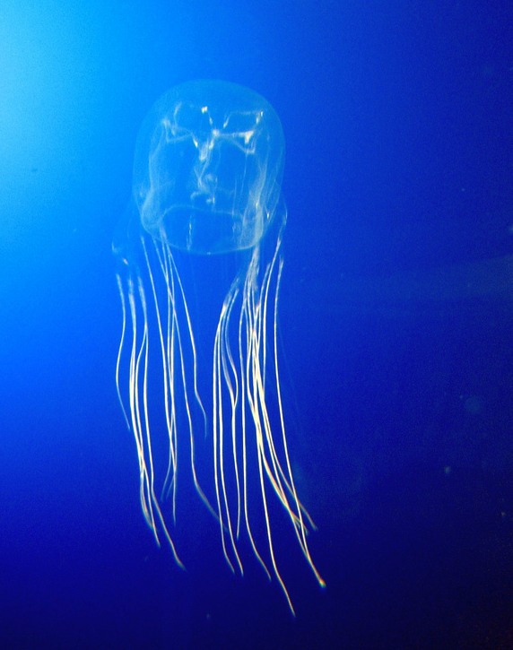
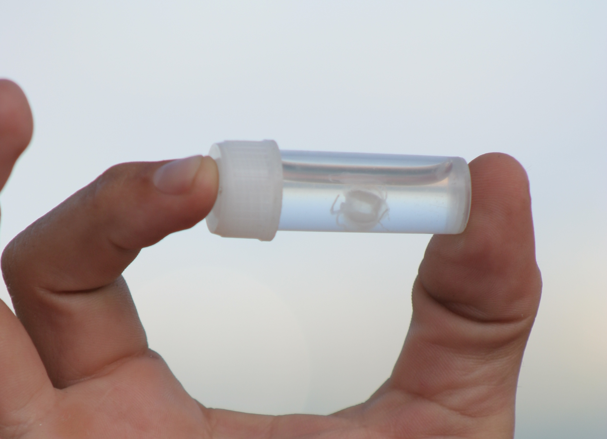
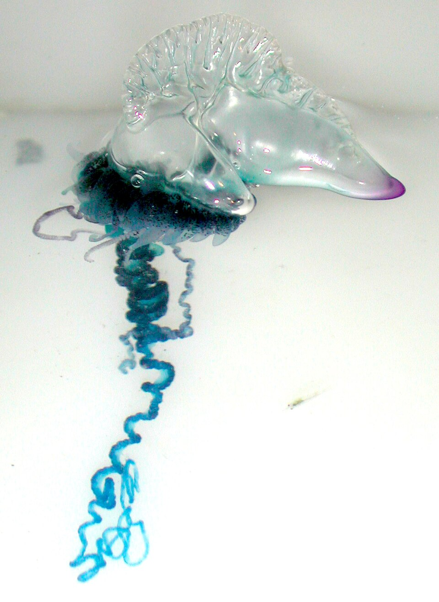
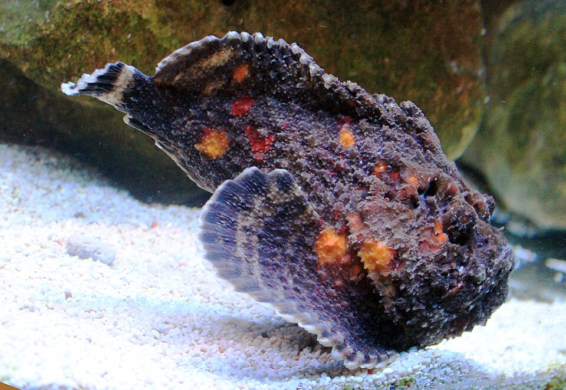
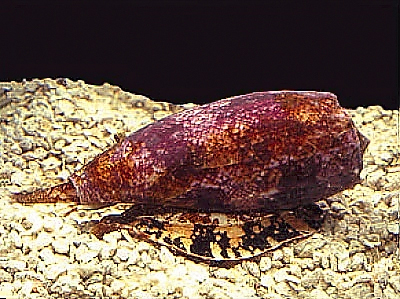
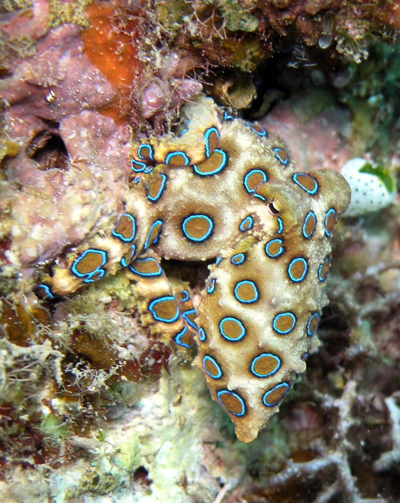
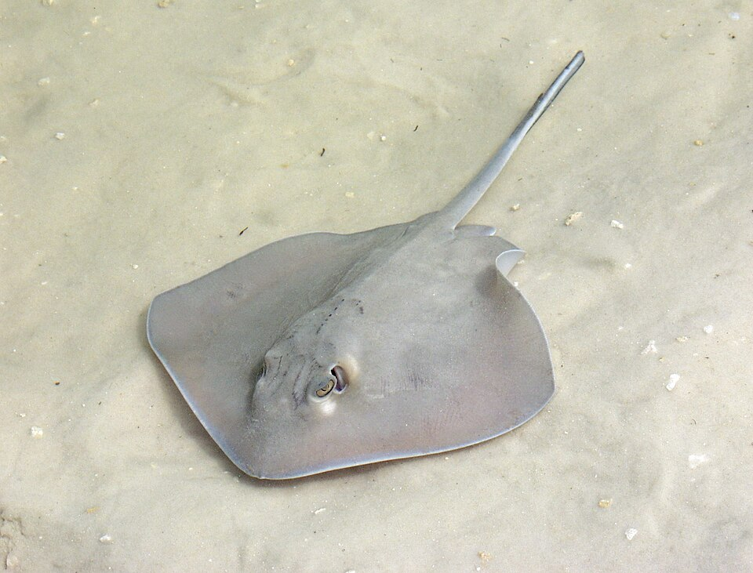

📑 Contents
- 1. Box Jellyfish (Chironex fleckeri)
- 2. Irukandji Syndrome (Carukia barnesi and related species)
- 3. Bluebottle (Physalia — Pacific Man O' War)
- 4. Stonefish (Synanceia species)
- 5. Cone Shells (Conus species)
- 6. Blue-Ringed Octopus (Hapalochlaena species)
- 7. Stingrays
- 8. Sea Urchins
- Quick Reference Table
- Cross-References
Marine Stingers
Australia's oceans are home to some of the world's most venomous marine animals. The correct first aid varies dramatically between species — using vinegar when heat is needed (or vice versa) can make things much worse. This reference covers the key species in order of danger.
1. Box Jellyfish (Chironex fleckeri)

Box Jellyfish (Chironex fleckeri) — the most venomous jellyfish in the world. Image: Wikimedia Commons (CC BY-SA).- Season: November–May (northern Australia — north of Tropic of Capricorn)
- Appearance: Pale blue, transparent bell (basketball size), up to 3m tentacles (15 tentacles per corner of bell)
- Sting: Instant severe pain. Tentacle marks appear as whip-like welts. Cardiac arrest can occur in 2–5 minutes with massive envenomation
- Lethality: Most lethal jellyfish in the world — estimated to have caused at least 70 deaths in Australia
Treatment
- Douse with VINEGAR — pour liberally over tentacles to stop undischarged nematocysts. Continue until medical help arrives
- DO NOT use fresh water (discharges more nematocysts)
- DO NOT use alcohol (also discharges nematocysts)
- Remove tentacles — use tweezers or gloved hands. Do not rub the area
- CPR if victim stops breathing
- Call 000 — antivenom available at hospital
- If in a remote area, activate PLB immediately
2. Irukandji Syndrome (Carukia barnesi and related species)

Irukandji Jellyfish (Carukia barnesi) — tiny but dangerous. Image: Wikimedia Commons (CC BY-SA).- Appearance: Very small (1-2cm bell), transparent box jellyfish — can pass through standard stinger nets
- Season: November–May, but recorded year-round in tropical north
- Sting: Minor initial sting (may not be noticed at all). 20–30 MINUTES LATER: the Irukandji syndrome develops
- Onset: Delayed. The delay is what makes it dangerous — by the time symptoms develop, the person may be far from help
Irukandji Syndrome Symptoms
- Severe back pain and muscle cramps
- Nausea and vomiting
- Profuse sweating
- Sense of impending doom (characteristic)
- Dangerous hypertension — can cause stroke or brain haemorrhage
- Pulmonary edema
- Heart failure (takotsubo cardiomyopathy — stress-induced)
Treatment
- Douse with VINEGAR at the beach if any sting occurs in Irukandji territory
- Call 000 immediately — Irukandji syndrome is a medical emergency
- Hospitalisation required — cardiac monitoring, pain management (opioids often needed), blood pressure control
3. Bluebottle (Physalia — Pacific Man O' War)

Portuguese Man O' War (Physalia physalis) — the common Bluebottle on Australian beaches. Image: Wikimedia Commons (CC BY-SA).- Not a jellyfish — a colonial organism (siphonophore): multiple specialised animals functioning as one
- Appearance: Blue/purple gas-filled float with a single long blue tentacle (1-10m). Can be mistaken for a child's balloon or piece of plastic
- Distribution: Common on ALL Australian beaches, especially after onshore winds
- Sting: Immediate sharp burning pain, red whip-like welts. Pain peaks at 15–30 minutes, lasts 1–2 hours
Treatment
- HOT WATER immersion (45°C) for 20+ minutes — heat denatures the venom
- Remove tentacles — do NOT use bare hands. Use tweezers, a stick, or a gloved hand. Rinse with seawater first to remove invisible stinging cells
- DO NOT use vinegar — may trigger more nematocyst discharge
- DO NOT use fresh water — also triggers discharge
- If hot water unavailable: apply cold pack (or ice wrapped in cloth)
- Systemic symptoms are rare — if breathing difficulty, vomiting, confusion, or chest pain occurs, call 000
4. Stonefish (Synanceia species)

Stonefish (Synanceia verrucosa) — the most venomous fish in the world. Camouflage makes it almost invisible on the sea floor. Image: Wikimedia Commons (CC BY-SA).- Most venomous fish in the world
- Appearance: Perfectly camouflaged on rocky/sandy bottom — looks exactly like a coral-encrusted rock. 13 dorsal spines deliver venom
- Habitat: Tropical Australian waters. Bottom-dwelling, shallow reefs, tide pools. Risk when wading or stepping on them
- Prevention: Thick-soled reef shoes or sandals prevent spine penetration
Symptoms
- IMMEDIATE extreme pain — victims consistently describe it as the worst pain imaginable
- Swelling spreading rapidly up the affected limb
- Pain can cause fainting, shock, and confusion
- May cause cardiac arrhythmias in severe cases
Treatment
- HOT WATER immersion — as hot as the victim can tolerate (45°C or higher) without burning
- Immerse affected area for 30–90 minutes — heat denatures the protein-based venom
- Remove spines if visible and superficial
- DO NOT use vinegar (ineffective against stonefish venom)
- Seek hospital — antivenom available. Even with antivenom, pain relief is the primary reason to seek care
- Monitor for signs of infection (marine bacteria)
5. Cone Shells (Conus species)

Geographic Cone (Conus geographus) — one of the most dangerous cone shell species. DO NOT pick up live shells. Image: Wikimedia Commons (CC BY-SA).- Appearance: Beautiful, cone-shaped shells in various patterns. The most dangerous species have a wide opening at the narrow end
- Habitat: Tropical reefs, shallow waters. Some species extend into southern Australian waters
- Toxin: Conotoxin — a complex mixture of neurotoxic peptides. Some species have enough venom to kill an adult human
- Mechanism: Harpoon-like tooth fired from a proboscis (extendable feeding tube) that can penetrate gloves and wetsuits
Symptoms
- Sharp pain (like a wasp sting) at the puncture site
- Localised numbness spreading from the site
- In severe cases: muscle paralysis, respiratory failure, death
- No antivenom exists — supportive care only
Treatment
- Pressure Immobilisation Bandage (PIB) — same as snake bite
- Immobilise the limb
- Call 000 — hospital required for monitoring
- Monitor breathing continuously — be prepared to provide rescue breathing or CPR
Prevention
- Never pick up live cone shells, no matter how attractive
- The harpoon can penetrate gloves and wetsuits
- Treat any shell with the animal inside as potentially dangerous
6. Blue-Ringed Octopus (Hapalochlaena species)

Blue-ringed Octopus (Hapalochlaena lunulata) — small, beautiful, and deadly. Image: Wikimedia Commons (CC BY-SA).- Appearance: Small (golf ball size, 10-20cm arm span). When agitated, brilliant iridescent blue rings appear — this is a warning display
- Habitat: Rock pools, coral reefs, shallow water across all Australian coasts (including temperate waters)
- Venom: Tetrodotoxin (TTX) — same toxin as pufferfish. 1,200 times more toxic than cyanide
- Action: Causes complete paralysis within minutes. Victim remains fully conscious but cannot move, speak, or breathe
- No antivenom exists — supportive care (mechanical ventilation) is the only treatment. Full recovery typically occurs over 24 hours if breathing is maintained
Treatment
- Immediate CPR if breathing stops
- Pressure Immobilisation Bandage over the bite site (if on limb)
- Call 000 — prolonged CPR may be needed (hours of ventilation)
- Victim is awake and aware despite appearing unconscious — talk to them, explain what is happening
- Prognosis is excellent with proper ventilation — complete recovery without brain damage if oxygen supply maintained
Prevention
- Never pick up or touch small octopuses in rock pools
- The blue rings are a warning — leave them alone
- Teach children: "small octopus = don't touch"
⚠️ Warning
**The blue-ringed octopus victim is conscious.** Despite being completely paralysed and appearing unconscious, they can hear and understand everything. Talk to them, reassure them, explain what you are doing.
7. Stingrays

Stingray — responsible for more injuries than any other venomous marine animal in Australia. The barb cause severe lacerations. Image: Wikimedia Commons (CC BY-SA).- Most injuries occur from standing on buried rays in shallow water — they bury themselves in sand for camouflage
- The Steve Irwin fatality was extremely rare (cardiac puncture from barb entering the chest)
- Barb wound: Causes severe laceration + venom injection. The barb is serrated and causes extensive tissue damage
Symptoms
- Immediate severe pain
- Profuse bleeding (barb can sever major blood vessels)
- Venom causes muscle cramps, nausea, sweating, weakness
- Barb fragments may remain in the wound
Treatment
- HOT WATER immersion — same as stonefish. Heat denatures the venom
- Control bleeding with direct pressure (the laceration is often more serious than the venom)
- Remove visible barb fragments (only if superficial — deeply embedded barbs require surgical removal)
- Clean wound thoroughly — marine bacteria are aggressive
- Check tetanus status — update if needed
- DO NOT apply PIB or tourniquet
- Seek hospital — deep wounds may need surgical exploration
Prevention
- The stingray shuffle: Shuffle your feet when wading in shallow water. This alerts buried rays and gives them time to swim away without feeling threatened
8. Sea Urchins
- Many species found in Australian waters — black, long-spined varieties are most common
- Spines are brittle and break off easily in skin
- Some species have venom-containing pedicellariae (small pincer-like structures between spines)
Treatment
- Hot water immersion — for pain relief from venom
- Remove superficial spines with tweezers if easy to grab
- Deep spines will be absorbed by the body over weeks — do NOT dig for them (causes more tissue damage)
- Infection risk (marine bacteria) — monitor for redness, swelling, warmth
- If signs of infection develop: seek medical attention — antibiotics may be needed
Quick Reference Table
| Animal | First Aid | Hot Water? | Vinegar? | Hospital? |
|---|---|---|---|---|
| Box jellyfish | Vinegar, CPR | No | YES | Immediately |
| Irukandji | Vinegar, 000 | No | YES | Immediately |
| Bluebottle | Hot water | YES | No | If severe symptoms |
| Stonefish | Hot water | YES | No | Yes (pain management) |
| Cone shell | PIB, call 000 | No | No | Immediately |
| Blue-ringed octopus | CPR, PIB | No | No | Immediately |
| Stingray | Hot water, bleeding control | YES | No | Yes if deep wound |
| Sea urchin | Hot water | YES | No | If infection develops |
Cross-References
- Australian Snake Bite — PIB technique for cone shells and blue-ringed octopus
- Spider Bites — Comparison with funnel-web and redback treatment
- Anaphylaxis — Allergic reactions to marine stings
- Outback First Aid — General first aid in remote areas
- Emergency Services — PLB activation, RFDS contact